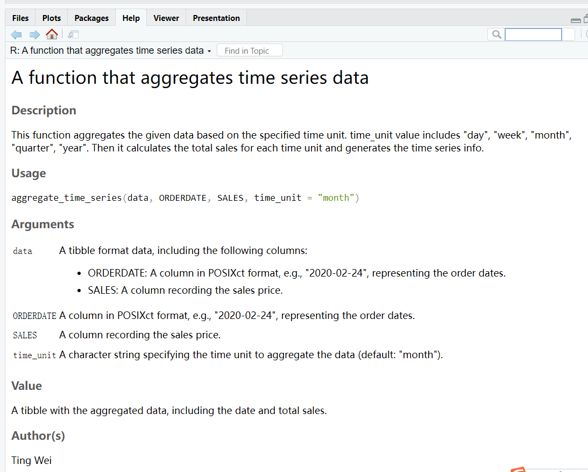
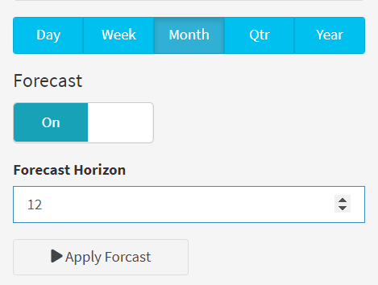

ui <- dashboardPage(
dashboardHeader(title = "Customer Dashboard"),
dashboardSidebar(
sidebarMenu( width = 160,
id = "sidebar",
menuItem("Customer Activity Analysis-HJ", tabName = "page1"),
menuItem("Customer Order Analysis-HJ", tabName = "page2"),
menuItem("Conversion Rate-YXC", tabName = "page3"),
menuItem("Consumer Segmentation-YXC", tabName = "page4"),
menuItem("Future Order Forecasting-WT", tabName = "page5"),
menuItem("Customer Forecasting-WT", tabName = "page6")
)
),
dashboardBody(
tabItems(
# Page 1
tabItem(
tabName = "page1",
sidebarLayout(
sidebarPanel(
# Add sidebar content for page 1 here
selectInput("page1_filter", "Page 1 Filter",
choices = c("Option 1", "Option 2"),
selected = "Option 1")
),
mainPanel(
h2("Page 1"),
# Add main panel content for page 1 here
textOutput("page1_output")1 PROJECT INTRODUCTION
The goal of this project was to create a dashboard application for an e-commerce company’s marketing, product development, and sales teams. The application utilizes customer data to provide insights for developing products and marketing plans targeted towards improving customer engagement and sales.
The project used an e-commerce dataset, which contained information about customer behavior data, purchase history, product preferences, customer segmentation, and future forcasting of order and consumer.
Data preprocessing steps were outlined, including data cleaning and user interface design using shinydashboard. The server function was described, highlighting the filtering of data and creation of reactive datasets. The report also mentioned the use of info boxes and graphs in the dashboard.
Overall, the project created a dashboard application that presented e-commerce data in a visually informative way, helping marketing, product development, and sales teams make data-driven decisions.
2 APPROCH / METHOD USED
2.1 Writing own advanced functions in R
Based on our specific requirements for data visualization, define the function you want to create. Consider the parameters the function should accept, such as the input data, visualization type, customization options, or filters. In order to visualize e-commerce data within the platform. Provide the necessary inputs and parameters to generate the desired visualizations based on the function’s capabilities.
2.2 Object-oriented programming
Create instances of the defined classes as needed within the e-commerce data visualization platform. Also implement some method based on the object-oriented programming
2.3 Using of C++ in R
We will use Rcpp to interface with C++ code for computationally intensive tasks. This will enable us to take advantage of the speed and memory efficiency of C++ for critical parts of our application.
We achieve an C++ implementation of the K-means clustering algorithm using the Rcpp library to integrate with R and perform the clustering using the kmeans function from the “stats” package.
2.4 Vectorisation of the code
Using vectorization techniques to optimize our code and make it more efficient. This will help us process large datasets quickly and accurately, and enhance the user experience.
We will have a dataset of customer transactions with timestamps, and we want to calculate the number of transactions that occurred within each hour of the day. Instead of using explicit loops, we can leverage vectorization techniques in R to perform this calculation efficiently.
By utilizing vectorization, we eliminate the need for explicit loops and perform the calculation efficiently using built-in functions. This approach is particularly useful when dealing with large datasets or performing repetitive calculations.
Similarly, we can apply vectorization techniques to other scenarios in our project, such as calculating statistics or performing aggregations based on specific time intervals or other criteria.
By leveraging vectorization, we can process data efficiently and perform calculations on large datasets in a concise and optimized manner, leading to improved performance and overall efficiency in our project
2.5 Shiny + creating analytical dashboards
We will leverage Shiny to create interactive and responsive dashboards that enable users to explore and visualize data, and make informed decisions. These dashboards will be user-friendly, intuitive, and aesthetically pleasing.
2.6 Creating own R packages
We will create our own R package to encapsulate the functionality we have developed. This package includes the generation of time series data. As long as the original data has a basic time format, new time series can be generated, including the year, quarter, month, week, and day, and model training of different dimensions based on the newly generated data. and forecast. Thus the new package will be data compatible, modular, reusable and easy to maintain. We will also leverage existing packages such as tidyverse, machine learning techniques or time series/spatial data analysis to enhance our new packages.
- aggregate_time_series

- generate_forecast
- plot_forecast
- plot_time_series
3 PLATFORMS STRUCTURE
Using the shinydashboard package in R. which sets up a dashboard with a header, sidebar, and main panel, and defines different tabs for each page. In the platform, there are six tabs:
“Customer Activity Analysis”: This tab includes visualizations and analysis related to customer activity. Such as website visits, clicks, or logins, over a certain period.
“Customer Order Analysis”: This tab focus on analyzing customer orders. Such as the total number of orders, revenue generated, the most popular products purchased, order trends over time.
“Conversion Rate”: This tab could be dedicated to analyzing conversion rates, which refer to the percentage of users who complete a desired action (e.g., making a purchase) out of the total number of users who visit a specific page or take a specific action.
“Consumer Segmentation”: This tab involves segmenting customers based on specific characteristics or behaviors. Such as high-value customers, frequent buyers, or lost customer.
“Future Order Forecasting”: This tab focus on predicting future orders or sales. Using time series forecasting techniques and machine learning algorithms to generate forecasts based on historical data.
“Customer Forecasting”: This tab is dedicated to forecasting customer-related metrics, such as customer classification trend, and customer lifetime value. Similar to the previous tab, using predictive modeling techniques to generate forecasts for these metrics.
4 DATA VISUALIZATION PLATFORMS
4.1 User Activity Visualization
In order to know how many customers browse ebuy platform every day，compare the UV and PV of the website when the user browses the website.
UV：Unique Visitor, basic indicators for evaluating user activity on network platforms
PV: Page Views
user_activity_daily <- function(data){
activity <- data %>%
group_by(date) %>%
summarize(UV = n_distinct(user_id), PV = n())
return (activity)
}user_activity_hour <- function(data){
hour <- data %>%
group_by(hour) %>%
summarize(UV = n_distinct(user_id), PV = n())
return (hour)
}Understand the stickiness of customers to ebuy platform, and count the daily and hourly per capita PV value.
average_pv1 <- function(data){
average1 <-
data %>%
group_by(date) %>%
summarize(UV = n_distinct(user_id), PV = n()) %>%
mutate(PVmeandaily = PV/UV)
return(average1)
}
average_pv2 <- function(data){
average2 <-
data %>%
group_by(hour) %>%
summarize(UV = n_distinct(user_id), PV = n()) %>%
mutate(PVmeanhourly = PV/UV)
return(average2)
}4.2 Order data analysis
How many orders are generated every day?
How many GMV（Gross Merchandise Volume）per day?
The answer is “User order data graph”
Why GMV is important ?
Performance measurement: GMV provides an overall measure of the scale and growth of a platform’s business. It helps track the platform’s sales performance and evaluate its success in attracting buyers and sellers.
Revenue generation: Many online marketplaces generate revenue by charging fees or commissions based on a percentage of the GMV. Thus, GMV directly impacts the platform’s revenue potential.
Market share comparison: GMV allows comparisons between different e-commerce platforms or online marketplaces. It helps investors, analysts, and stakeholders assess the market presence and competitiveness of a platform relative to its peers.
Valuation: GMV is sometimes used as a key factor in valuing e-commerce businesses, especially in startup or investment scenarios. Higher GMV figures can positively influence the valuation of a platform.
user_order <- function(data){
user <- data %>%
group_by(date) %>%
summarise(distinct_users = n_distinct(user_id),
total_products = n(),
total_price = sum(product_price))
return(user)
}- Want to know which product is the most popular?
- How many sales of hot-selling products per day?
- What is the daily income of hot-selling products?
The answer is “Hot product chart”
hot_product <- function(data){
product <- data %>%
group_by(product_name) %>%
summarise(count_order = n(),
sum_product_price = sum(product_price))
return(product)
}4.3 Funnel model for conversion rate
The conversion rate of users in the shopping process is one of the most important indicators of e-commerce platforms. The higher the conversion rate, the higher the stickiness of users to the platform.
- The funnel conversion rate model for user behavior：
pv_sum <- length(pv_data_object@behavior_id)
cf_sum <- length(cf_data_object@behavior_id)
buy_sum <- length(buy_data_object@behavior_id)
merge_sum <- nrow(merged_data)
sum
# Calculating conversion rates
convert_rate_action <- c(100, cf_sum[[1]] / pv_sum[[1]] * 100,
buy_sum[[1]] / pv_sum[[1]] * 100)
x_data <- c("Website visit",
"Add to cart & Add to favorite", "Buy product")
# Creating data for funnel chart
data <- data.frame(name = x_data, y = convert_rate_action)
# Creating funnel chart
hc <- highchart() %>%
hc_chart(type = "funnel") %>%
hc_title(text = "conversion_rate_action",
subtitle = "Browse --> Purchase&Favorite --> Purchase") %>%
hc_add_series(data = data,
type = "funnel",
name = "",
dataLabels = list(enabled = TRUE, inside = TRUE),
tooltip = list(pointFormat = "{point.name}: {point.y}%"),
borderColor = "#fff",
borderWidth = 1)- The funnel conversion rate model for individual users:
pv_sum <- length(pv_data_object@behavior_id)
cf_sum <- length(cf_data_object@behavior_id)
buy_sum <- length(buy_data_object@behavior_id)
merge_sum <- nrow(merged_data)
sum
# Calculating conversion rates
convert_rate_action <- c(100,
cf_sum[[1]] / pv_sum[[1]] * 100,
buy_sum[[1]] / pv_sum[[1]] * 100)
x_data <- c("Website visit", "Add to cart & Add to favorite", "Buy product")
# Creating data for funnel chart
data <- data.frame(name = x_data, y = convert_rate_action)
# Creating funnel chart
hc <- highchart() %>%
hc_chart(type = "funnel") %>%
hc_title(text = "conversion_rate_action",
subtitle = "Browse --> Purchase&Favorite --> Purchase") %>%
hc_add_series(data = data,
type = "funnel",
name = "",
dataLabels = list(enabled = TRUE, inside = TRUE),
tooltip = list(pointFormat = "{point.name}: {point.y}%"),
borderColor = "#fff",borderWidth = 1)4.4 Consumer segmentation using K-Means and RFM
RFM: marketing technique used to quantitatively rank and group customers based on the recency, frequency and monetary total of their recent transactions to identify the best customers and perform targeted marketing campaigns. RFM analysis is based on the marketing adage that “80% of your business comes from 20% of your customers.”
- Recency. How recent was the customer’s last purchase?
- Frequency. How often did this customer make a purchase in a given period?
- Monetary. How much money did the customer spend in a given period?
Then, using K-Means to cluster our consumer.
- firstly, z-score standardization helps to adjust all data elements to a common scale to improve the performance of clustering algorithms.
- using K-Means, I directly set 3 clusters.
scaled_data <- k_mean_data %>%
select(-user_id) %>%
scale()
# Perform k-means clustering
k <- 3 # Number of clusters
kmeans_result <- kmeans(scaled_data, centers = k, nstart = 10)
# Get cluster assignments and cluster centers
clusters <- kmeans_result$cluster
centroids <- kmeans_result$centers
# Add cluster assignments to the dataframe
k_mean_data$group <- clustersThen, the classification results are displayed. Use the radar map to illustrate the classification method.
group1: the time since the last consumption is the shortest, although the frequency and monetary are low, but the consumption has been relatively active, they can be motivated by some promotional tools.
group3: customers are the frequency and monetary are the largest. They are high-value customers and need to be maintained.
group2: worst consumption behaviors. They are likely to be churned customers and
need to be activated
centroids_restored <- centroids * attr(scaled_data, "scaled:scale")
+ attr(scaled_data, "scaled:center")
# Plot the radar chart
group1 <- as.list(centroids_restored[1, ])
group2 <- as.list(centroids_restored[2, ])
group3 <- as.list(centroids_restored[3, ])
radar <- plot_ly(type = 'scatterpolar', mode = 'lines')
radar <- add_trace(
radar,
r = c(group1$recency, group1$frequency, group1$monetary),
theta = c('recency', 'frequency', 'monetary'),
fill = 'toself',
name = 'group1',
line = list(color = '#f9713c')
)
radar <- add_trace(
radar,
r = c(group2$recency, group2$frequency, group2$monetary),
theta = c('recency', 'frequency', 'monetary'),
fill = 'toself',
name = 'group2',
line = list(color = '#b3e4a1')
)
radar <- add_trace(
radar,
r = c(group3$recency, group3$frequency, group3$monetary),
theta = c('recency', 'frequency', 'monetary'),
fill = 'toself',
name = 'group3',
line = list(color = '#5CACEE')
)
radar <- layout(
radar,
title = 'Radar-Buyer Group',
showlegend = TRUE
)4.5 Future Order Forcast
Future order forecasting page was incorporated the shiny dashboard library for the sidebar layout. Graphs and figures were created using the ggplot2 library and data table.
4.5.1 Data Preprocessing
# Load data
sales_data_raw <- read_csv('data/orders02.csv')
# Select relevant data
processed_data_tbl <- sales_data_raw %>%
select(ORDERDATE, ORDERNUMBER, ORDERLINENUMBER,
COUNTRY, SALES, PRODUCTLINE,
DEALSIZE, STATUS, CUSTOMERNAME)
# Pre-processing
processed_data_tbl <- processed_data_tbl %>%
mutate(ORDERDATE = mdy_hm(ORDERDATE),
ORDERDATE = as_datetime(ORDERDATE))
# Manual edits
processed_data_tbl$COUNTRY[processed_data_tbl$COUNTRY=="UK"] <- "United Kingdom"
processed_data_tbl$COUNTRY[processed_data_tbl$COUNTRY=="USA"] <- "United States"4.5.2 Modeling
To forcast the future order, linear regression can be utilized to forecast the year order, while a gradient boosting machine (GBM) can be employed to predict the quarter，month, week, and day order. Gradient boosting machines are powerful machine learning algorithms that combine multiple weak prediction models to create a strong ensemble model. In the case of forecasting the month, week, and day order, a GBM can be trained using historical data on past order patterns to create a predictive model that can anticipate the specific month, week, and day when a customer is likely to place an order.
generate_forecast <-
function(data, n_future = 12, seed = NULL) {
train_tbl <- data %>%
tk_augment_timeseries_signature()
future_data_tbl <- data %>%
tk_index() %>%
tk_make_future_timeseries(n_future = n_future,
inspect_weekdays = TRUE,
inspect_months = TRUE) %>%
tk_get_timeseries_signature()
# Isolate and pull scale
time_scale <- data %>%
tk_index() %>%
tk_get_timeseries_summary() %>%
pull(scale)
# Linear Regression for "year", XGBoost for other time units
if (time_scale == "year") {
model <- linear_reg(mode = "regression") %>%
set_engine(engine = "lm") %>%
fit.model_spec(total_sales ~ .,
data = train_tbl %>% select(total_sales, index.num))
} else {
seed <- seed
set.seed(seed)
model <- boost_tree(
mode = "regression",
mtry = 20,
trees = 500,
min_n = 3,
tree_depth = 8,
learn_rate = 0.01,
loss_reduction = 0.01) %>%
set_engine(engine = "xgboost") %>%
fit.model_spec(total_sales ~ .,
data = train_tbl %>%
select(-date, -label_text, -diff))
}4.6 Visualization
4.6.1 Filter area

The resulting dashboard application allowed users to filter purchase data, country, choose forcasting time-units(Day, week, month, quarter, and year) and horizons. For helping businesses identify patterns and trends in customer order. Code example is as follows:
library(shinyWidgets)
switchInput(inputId = "forecast_mode",
handleWidth = 100,
labelWidth = 100,
inline = TRUE,
value = FALSE,
onStatus = "info",
onLabel = "On",
offLabel = "Off",
width = "200px"),
conditionalPanel(condition = "input.forecast_mode == 1",
numericInput(inputId = "n_future",
label = "Forecast Horizon",
value = 12,
min = 1 # At least 1 period in the future
)),
# APPLY BUTTONS -----
actionButton(inputId = "apply",
label = "Apply Forcast",
icon = icon("play"),
width = '50%')4.6.2 Reactive events
Here are several reactive events implemented using different methods:
Button Click Event: Using the observeEvent method, the reactive code is triggered when the user clicks the “Apply” button. This means that after selecting the data filter, the user needs to manually click the button to update the data visualization results.
Time Unit Button Event: Using the observeEvent method, the reactive code is triggered when the user clicks the “Time Unit” button, simulating the effect of clicking the “Apply” button. This means that after selecting the time unit, there is no need to manually click the “Apply” button as the data visualization results will automatically update.
Reactive Expression based on Input: Using the reactive method, a reactive expression is created based on user input. The reactive expression will automatically recompute and update the data visualization results when the input value changes.
Reactive Event for Forecast Switch: Using the eventReactive method, a reactive event is created that triggers when the forecast switch status changes. This can be used to execute code related to forecasting, such as generating forecast results based on the selected time unit.
These reactive events differ in terms of how they are triggered and when the data visualization results are updated. Reactive expressions automatically recalculate when input values change, while the reactive event for the forecast switch can execute code related to forecasting when the switch status changes. These different reactive events enable the data visualization platform to update and present data in real-time based on user actions and selections. Code example is as follows:
processed_data_filtered_tbl <- eventReactive(
eventExpr = input$apply,
valueExpr = {
processed_data_tbl %>%
# Date Range filter
filter(ORDERDATE %>% between(left = as_datetime(input$date_range[1]),
right = as_datetime(input$date_range[2]))) %>%
# Picker filter: Country
filter(COUNTRY %in% input$picker_country) },
ignoreNULL = FALSE # Don't pass data as default: run code when app load )
observeEvent(eventExpr = input$time_unit, {
if (input$forecast_mode) {
delay(300, click(id = "apply"))
# Add delay and simulate clicking actions in JavaScript } })
observeEvent(eventExpr = input$forecast_mode, {
delay(300, click(id = "apply"))
# Add delay and simulate clicking actions in JavaScript
}, once = TRUE)
time_plot_tbl <- reactive({
processed_data_filtered_tbl() %>%
aggregate_time_series(time_unit = input$time_unit)})
time_plot_predictions_tbl <- eventReactive(eventExpr = input$apply, {
if (input$forecast_mode) {
time_plot_tbl() %>%
generate_forecast(n_future = input$n_future, seed = 123) }})4.6.3 Using own_package to predict future orders
We will create our own R packages “Predict Future Order” to encapsulate the functions we develop. The given package code contains four functions that perform different tasks related to time series data and use it to predict the future order. Here’s a description of each function:
- aggregate_time_series: Aggregate_time_series: This function produces a new time dimension based on dates, such as day, week, month, quarter or year, and it calculates the total sales per time unit.
#' A function that aggregates time series data
#'
#'This function aggregates the given data based on the specified time unit.
#'time_unit value includes "day", "week", "month", "quarter", "year".
#'Then it calculates the total sales for
#'each time unit and generates the time series info.
#' @author Ting Wei
#' @param data A tibble format data, including the following columns:
#' - ORDERDATE: A column in POSIXct format,
#' e.g., "2020-02-24", representing the order dates.
#' - SALES: A column recording the sales price.
#' @param time_unit A character string specifying
#' the time unit to aggregate the data (default: "month").
#' @param ORDERDATE A column in POSIXct format, e.g.,
#' "2020-02-24", representing the order dates.
#' @param SALES A column recording the sales price.
#' @return A tibble with the aggregated data,
#' including the date and total sales.
#' @examples
#' # Example data
#' data <- tibble::tribble(
#' ~ORDERDATE, ~SALES,
#' "2020-02-24", 2871,
#' "2020-05-07", 2766,
#' "2020-08-30", 3884,
#' # More rows...
#' )
#' data$ORDERDATE=as.POSIXct(data$ORDERDATE)
#' aggregated_data <- aggregate_time_series(data,
#' time_unit = "month")
#' aggregated_data
#' @import dplyr
#' @import lubridate
#' @import stringr
#' @import scales
#' @export
#aggregate_time_series(processed_data_tbl)
aggregate_time_series <-
function(data, ORDERDATE,SALES, time_unit = "month") {
output_tbl <- data %>%
dplyr::mutate(date = floor_date(ORDERDATE, unit = time_unit)) %>%
group_by(date) %>%
summarize(total_sales = sum(SALES)) %>%
ungroup() %>%
dplyr::mutate(label_text = str_glue("Date: {date}
Revenue: {scales::dollar(total_sales)}"))
return(output_tbl)
}plot_time_series: This function plots the time series data, showing the total sales over time. It uses the ggplot2 library to create a line plot with points, smoothing, and axis labels.
generate_forecast: This function generates forecasts for the future time periods based on the given time series data. It uses different modeling techniques, such as linear regression and XGBoost, depending on the time unit of the data. It returns a data frame with the actual and predicted values for the time series
#' A function that generates forecasts for the time series data
#'
#' This function generates forecasts for the future
#' time periods based on the given data.
#'
#' @param data A data frame containing the time series data.
#' @param n_future An integer specifying the number
#' of future periods to forecast (default: 12 and min:1).
#' @param seed An optional seed for reproducibility (default: NULL).
#' @return A data frame with the actual
#' and predicted values for the time series data.
#' @import dplyr
#' @import parsnip
#' @import tidyverse
#' @import stringr
#' @import scales
#' @import tibble
#' @import timetk
#' @export
generate_forecast=function(data, n_future = 12, seed = NULL) {
train_tbl <- data %>%
tk_augment_timeseries_signature()
future_data_tbl <- data %>%
tk_index() %>%
tk_make_future_timeseries(n_future = n_future, inspect_weekdays = TRUE, inspect_months = TRUE) %>%
tk_get_timeseries_signature()
# Isolate and pull scale
time_scale <- data %>%
tk_index() %>%
tk_get_timeseries_summary() %>%
pull(scale)
# Linear Regression for "year", XGBoost for other time units
if (time_scale == "year") {
model <- linear_reg(mode = "regression") %>%
set_engine(engine = "lm") %>%
fit.model_spec(total_sales ~ ., data = train_tbl %>% select(total_sales, index.num))
} else {
seed <- seed
set.seed(seed)
model <- boost_tree(
mode = "regression",
mtry = 20,
trees = 500,
min_n = 3,
tree_depth = 8,
learn_rate = 0.01,
loss_reduction = 0.01) %>%
set_engine(engine = "xgboost") %>%
fit.model_spec(total_sales ~ ., data = train_tbl %>% select(-date, -label_text, -diff))
}
prediction_tbl <- predict(model, new_data = future_data_tbl) %>%
bind_cols(future_data_tbl) %>%
select(.pred, index) %>%
rename(total_sales = .pred,
date = index) %>%
mutate(label_text = str_glue("Date: {date}
Revenue: {scales::dollar(total_sales)}")) %>%
add_column(key = "Prediction")
output_tbl <- data %>%
add_column(key = "Actual") %>%
bind_rows(prediction_tbl)
return(output_tbl)
}- plot_forecast: This function plots the actual and predicted values for the time series data. It creates a line plot with different colored lines for the actual and predicted values. It also includes smoothing and point markers for the data points.
These functions provide a comprehensive set of tools for aggregating, visualizing, and forecasting time series data. Presenting aggregate_time_series, and generate_forecast as example:
4.6.4 Future order prediction table info
output$page5_output02 <- DT::renderDataTable({
if (input$forecast_mode) {
time_plot_predictions_tbl() %>%dplyr::select(key,date,total_sales)
}
else {time_plot_tbl() %>%dplyr::select(date,total_sales)}
},options = opts)4.7 Customer Forcast
To forecast a customer’s future behavior and belonging group. Analyze the predicted customer behavior to identify segments. Analyzing and segmenting customers into these categories allows businesses to prioritize their efforts and allocate resources effectively
mportant VIP: Important VIP customers are those who hold significant value for the business. Identifying and retaining these VIP customers is crucial for the success and growth of the business. Companies often provide special benefits, personalized services, and exclusive offers to maintain a strong relationship with their important VIP customers.
Lost Customers: Lost customers refer to those who were previously engaged with the business but have stopped making purchases or interacting with the company. Identifying and understanding the reasons for customer churn is essential for businesses to take appropriate actions to win back lost customers or prevent further customer attrition.
Retained Customers: Retained customers are the customers who continue to engage with the business and make repeat purchases over time. Building strong relationships with retained customers through personalized communication, rewards programs, and excellent customer service is important to maintain their loyalty and maximize their lifetime value.
customer_forecast <-
function(data, n_future = 12, seed = NULL) {
train_tbl <- data %>%
tk_augment_timeseries_signature()
future_data_tbl <- data %>%
tk_index() %>%unique()%>%
tk_make_future_timeseries(n_future = n_future,
inspect_weekdays = TRUE,
inspect_months = TRUE) %>%
tk_get_timeseries_signature()
future_data_tbl<- future_data_tbl[rep(row.names(future_data_tbl),
each = 3), ]
categories <- c("Retain_Customers",
"Lost_Customers", "Important_Vip")
num_rows <- nrow(future_data_tbl)
repeated_categories <- rep(categories, length.out = num_rows)
future_data_tbl$classification <- repeated_categories
# Isolate and pull scale
time_scale <- data %>%
tk_index() %>%unique()%>%
tk_get_timeseries_summary() %>%
pull(scale)
# Linear Regression for "year", XGBoost for other time units
if (time_scale == "year") {
model <- linear_reg(mode = "regression") %>%
set_engine(engine = "lm") %>%
fit.model_spec(total_num ~ .,
data = train_tbl %>%
select(total_num,classification ,index.num))
} else {
seed <- seed
set.seed(seed)
model <- boost_tree(
mode = "regression",
mtry = 20,
trees = 500,
min_n = 3,
tree_depth = 8,
learn_rate = 0.01,
loss_reduction = 0.01) %>%
set_engine(engine = "xgboost") %>%
fit.model_spec(total_num ~ .,
data = train_tbl %>% select(-date, -diff))
}